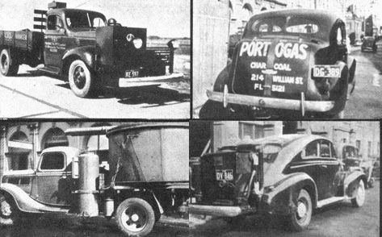
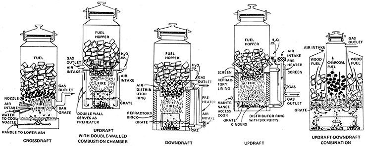

Tired of shelling out your life savings every time you want to do a little trucking? A proven alternative - producer gas - may be the right answer for you.
That's right, proven. Producer gas (also called town gas, coal gas and power gas) is nothing new or mysterious. The principle of its manufacture has been known about a century and a half. This fuel, in fact, enjoyed a real boom in Europe and Australia during the oil shortages of World War II. During part of that period, 90% of Swedish motor traffic operated on gas derived from wood or charcoal.
That same crisis, naturally, stimulated an abundance of research on coal gas, and mounds of material were written on the subject. I've tried to summarize part of the literature in this article . . . which is intended only to acquaint you with the fuel and prod you into thinking about it as an alternative to gasoline. Anyone who's serious about its practical use should check out the sources shown in the reading list.
Producer gas is made by sucking a limited amount of air through a bed of red-hot carboniferous fuel (wood, charcoal, low-temperature coke, straw, peat, etc.) in a closed furnace called a generator. The result - after a series of intricate chemical reactions - is carbon monoxide. This - the primary explosive ingredient of producer gas - can be mixed with approximately the same amount of air and burned in the internal combustion engine in much the same way as gasoline.
A fine jet of water or steam added to the generator's air intake will result in a gas of higher hydrogen content, sometimes called "water gas" or "blue gas". This is generally a better-quality fuel than the plain producer gas. The addition of liquid, however, complicates the design of the generating unit.
Coal gas - when used as a motor fuel - is usually manufactured in transit, by a device installed right on the moving vehicle. The mobile plant can be built most easily from mild steel (a 55-gallon drum, for instance) and is composed of a generator, a cleaning and cooling apparatus and a mixing valve. These parts are connected to one another and to the engine by means of pipes. A fan can be added to the system to aid the flow of gas. Usually, though, the suction of the powerplant's intake is all that's required to pull the air and fumes through the unit.
In the simplest generators, the fuel is gravity-fed from a hopper into a combustion chamber. Unless the unit is designed to avoid a heat problem, the high temperatures in the firebox call for special construction of that area: The compartment may be lined with refractory brick, or built double-walled with the intervening space used as an air intake or preheater. It's also necessary - as a precaution against fire - to fit any generator with a flame trap at the air intake.
A grate is normally located below the combustion chamber to holdup the smoldering fuel and allow air to circulate around it. The ash and cinders fall through the bars for easy removal.
Generator design is limited only by ingenuity. There are, however, four basic types that have been used successfully in the past. These are usually classified according to the direction of air and gas flow: updraft, downdraft, crossdraft and updraft/downdraft combination.
The updraft system draws in air below the burning fuel and collects the resulting gas above it. The design is said to have a somewhat greater power output than either the downdraft or the crossdraft type . . . and is also probably the easiest for the amateur mechanic to build. One drawback is reported: The gas in the updraft system tends to collect a certain amount of tar as it rises through the heated but unburned fuel.
The downdraft design is similar to the updraft but with the positions of the air intake and gas outlet reversed. Such units are especially suited for wood and other tarry fuels, since the gummy impurities are drawn out and broken down or "cracked" as they pass through the combustion zone.
In the crossdraft generator, the air and gas flow is roughly horizontal. Air is injected into the system at a high velocity through a narrow nozzle (which must be water-cooled, or built of heat-resistent material such as carborundum, to withstand the very hot combustion zone created in the center of the fuel bed). This design is the most difficult to construct in the home workshop, and has a shorter life expectancy than the other types. It is, however, the easiest to light.
The updraft/downdraft combination consists of two steel cylinders, one within the other. Wood is placed in the outer container, charcoal in the inner. Air moves down through the wood, into the combustion chamber and then up through the charcoal to a gas outlet at the top. Water vapor and tar are drawn from the heated wood and pass through the fire where much of the tar is "cracked". The steam then reacts with the carbon of the charcoal in the inner cylinder to form hydrogen and carbon monoxide. This process yields a relatively rich product.
Before you can pipe producer gas from the generator into your auto's engine, the fuel needs to be cleaned of any solid particles, ash, soot or tar. The most effective purifying system seems to be an oil-bath washing apparatus followed by a series of dry filters. That is, the gas is run through a pad or screen. immersed in oil (the porous material serves to break up any large gas bubbles that might carry impurities through the bath). The fuel then passes through layers of dry sisal or fiberglass and a final barrier made of felt or similar material. If any of the other straining devices fail, this last "security filter" will rapidly become clogged and prevent any damage that might result from foreign matter getting to the engine.
Coal gas also needs to be cooled before use (to increase its density and hence its power output by volume). This can be done with a special cooling box or by mounting metal cooling fins on the connecting pipes.
After the gas has been cleaned and cooled, of course, it has to be combined with air so that it can be burned in an internal combustion engine. The necessary mixing valve can be as simple as a Y-shaped piece of pipe with a butterfly device in the air intake branch to control the mixture . . . or as complicated as a modified LP or natural gas carburetor system.
You'll also need to set the spark advance beyond the gasoline setting . . . perhaps with a manual control. Learning to drive with this gadget, and the mixing valve, is a matter of trial and error until you get the hang of how your engine runs best.
A producer unit will need to be custom mounted on your vehicle (most conveniently on the running board, if the model you drive is old enough to have one). Alternatively, you could install the generator in the trunk, but this is seldom the best arrangement because a line leak could fill the passenger space with carbon monoxide . . . a deadly poison. (For the same reason, an auto equipped with a gas generator should never be parked in a closed garage.) An extended platform on the rear end of the automobile may be the most desirable location, since it allows air cooling and easy access for maintenance.
Just how well can you expect your auto to perform on this homemade fuel? Chances are you won't set any records: The sources I've consulted indicate a power loss of 35 to 50% (due to the high proportion of non-combustible nitrogen in producer gas).
The extent of this loss depends on several factors: first, what you're burning in the generator. Softwoods such as pine and fir - used either as wood or charcoal-have a higher power value than hardwoods (but also produce more tars, so that the gas must be cleaned more carefully).
The nature of the engine itself also affects its performance on producer gas. Larger powerplants with higher compression ratios generally do best of all. With a big, high-compression V-8, in fact, performance on this fuel may be almost as good as when the engine is run on gasoline.
In any case, the loss isn't of vital importance because modern automobile engines have considerable power reserves. The only adverse effects are reduced acceleration, climbing speed, top-end speed and ability to carry overloads.
If you really need to roar down the road at 70 or 80 mph, there are many ways to offset any loss of power on producer gas. You can, for instance, hop up your engine by adding a supercharger (available commercially). Alternatively - or in addition - you can increase the compression ratio: install domed pistons, shave the cylinder heads or enlarge the cylinders and use oversized pistons. Ratios of 9:1 and higher have been tried with very good results.
Producer gas has a few other drawbacks apart from the whole question of power loss. One obvious disadvantage of a vehicle equipped with a gas generator is that you'll be carrying a very hot fire around with you . . . not exactly ideal in case of accident. But then, gasoline isn't all that safe under the same circumstances. The conventional fuel, however, doesn't require any attention on your part (other than an occasional stop at the corner station) while gas-making equipment may need as much as 30 minutes of maintenance a day.
If you were hoping for an ultimate answer to air pollution from motor vehicles, by the way, producer gas isn't it. The fuel consists of approximately 50% nitrogen, 28% carbon monoxide, 15% hydrogen, 5% carbon dioxide and 2% methane. The exhaust will therefore be high in nitric oxides, and some of the carbon monoxide will undoubtedly pass through the engine unburned. The rest of the wastes will be carbon dioxide and water vapor. Far from perfection, obviously . . . but nevertheless cleaner than the residues from gasoline.
Probably coal gas' greatest selling point is that - unlike petroleum products - it's made from a renewable resource. Mother Nature is out there growing more wood every day. If you live near any kind of forest area you could run your car on just a small portion of the wastes from timber production (while remaining independent of the big oil companies and avoiding the state and federal taxes you crow pay on every gallon of motor fuel you buy).
Producer gas, like any alternative, will suit some people but not everyone. If it's not for you, don't give up! There are other ways. In 1942, for instance, an ingenious Swedish baker condensed the vapors from the bread browning in his ovens and obtained enough alcohol to run a fleet of 30 trucks. The possibilities are there... we only we only have to see them to see them and put them to use.
The following sources are not highly technical but should be fairly easy to track down:
"Can We Use Wood to Beat the Gasoline Shortage?" Popular Science, January 1944, pp. 120-121.
"Charcoal and Water Are Converted Into Gas That Runs Trucks " : Popular Science, September 1944, pg. 141.
"Charcoal Gas for Motors: American Made Unit Available for Motor Vehicles". Scientific American, October 1944, pg. 174.
Those who want more detailed information should try to obtain the materials listed below by having their local libraries borrow them from the Library of Congress. (Loans aren't made to individuals. Magazines aren't allowed to circulate, but can sometimes be photocopied for a fee.)
"Gas Producers for Motor Vehicles and their Operation with Forest Fuels" by I. Kissin. Technical Communication No. 1, Imperial Forestry Bureau, England, 1942.
"Experiments on a High-Speed Producer Gas Engine"by A. E Burstall and M.W. Woods. London Engineer No. 167, 1939, pp. 640-642.
Producer Gas for Motor Vehicles by Cash and Cash. Angus and Robertson Ltd., Sydney, Australia, 1942.
"The Modern Portable Gas-Producer: Theory, Design, Fuels, Performance, Utilisation and Economics" by B. Goldman and N. Clarke Jones. Journal of the Institute of Fuels No. 12, London, 1939.
|
 Producer gas vehicles: World War II, England |
 The five diagrams illustrate the most widely used types of producer gas generator. As you can see, the devices differ in location of air intake and gas outlet ...and consequently in the direction of draft. The crossdraft model at far left is effective and easy to light. It is, however, tricky to construct and its nozzle must be water-cooled to withstand the high temperatures created in the unit's fire zone. The second generator-an updraft type-shows a refinement of firebox design: a double wall which serves both as insulation and as a preheater. Next in line is a downdraft generator, which has the advantage of "cracking" some of the tarry impurities in the gas as it's drawn through the fire zone to the outlet. Number four, a simple updraft design, is probably the easiest to build and also is said to have a higher production rate than downdraft or crossdraft systems. Last in the series is an ingenious variation which combines the updraft and downdraft design. Vapors from the heated wood pass through the combustion chamber where many of their impurities are broken down. The reaction of the steam with the charcoal in the inner compartment then produces a relatively rich fuel high in hydrogen content. Any of these models can be conveniently constructed from a mild steel container such as a 55-gallon drum. |
|